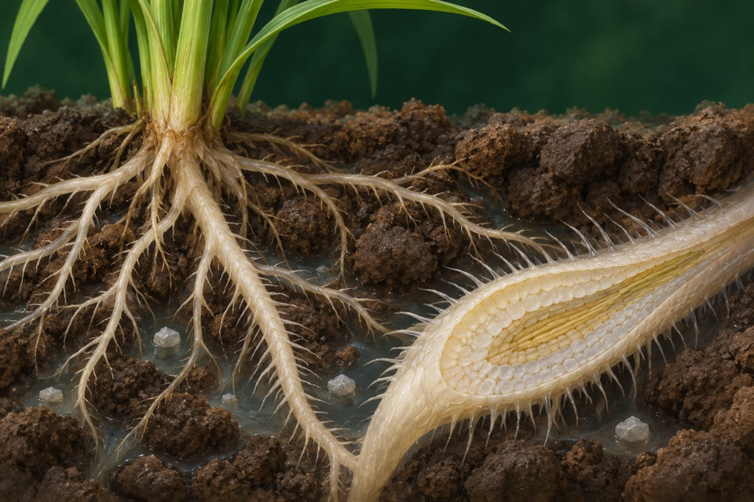
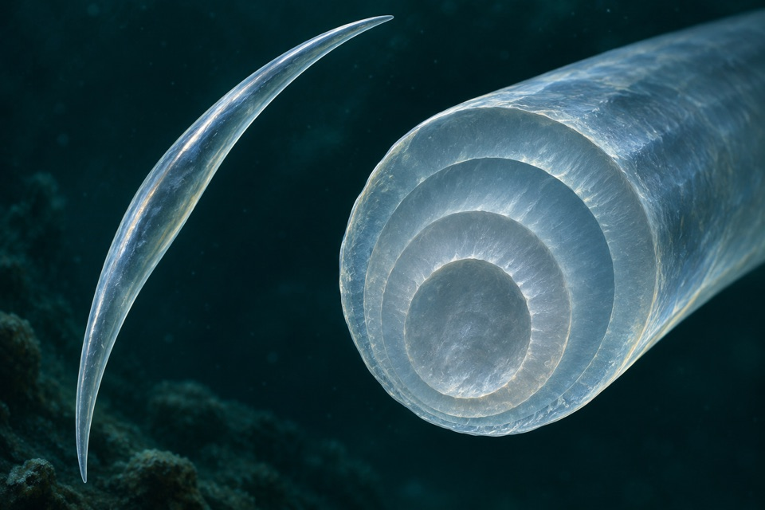
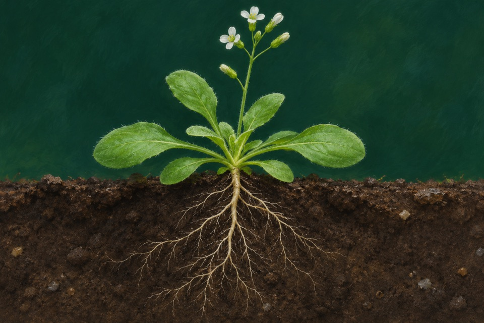

Module 01
De novo cobalamin biosynthesis
Measure chemically identified cobalamin on a stated dry biomass or culture-volume basis.
Evidence recordOpen any of the ten modules to see the reported observation, its sources, and the research questions still open.
Measure chemically identified cobalamin on a stated dry biomass or culture-volume basis.
Evidence record
Measure viability after drying and rehydration with a defined recovery readout.
Evidence record
Measure entry of dissolved silicon into the uptake pathway.
Evidence record
Confirm calcium carbonate mineral formation and its location relative to cells.
Evidence record
Measure total and extracellular folate separately in a defined culture.
Evidence record
Measure strain at failure in bending.
Evidence record
Maintain root potassium uptake and growth under low potassium availability.
Evidence recordMeasure cis,cis-muconate produced from supplied aromatics.
Evidence record
Measure total seed iron and verify which seed compartment contains the introduced ferritin.
Evidence record
Measure the polymer mass distribution of secreted hyaluronan.
Evidence record